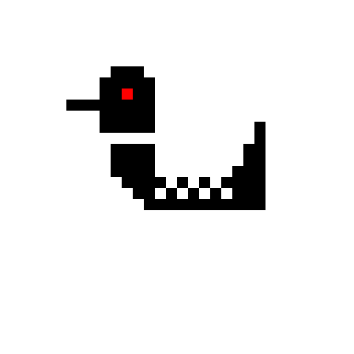
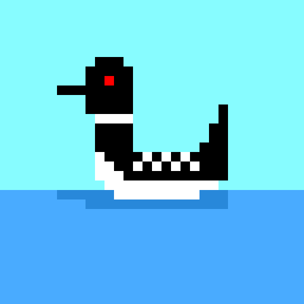

My Artwork


The Loon: Two images of a loon I made using Piskel. I made this to test my skills and see if I could make animals that are odd shaped.

The Camel: A picture of a camel I made using Piskel. Just because I was bored and this counted as working on a creative skill.